Home / Cancer awareness
Cancer awarenessCreating awareness. Encouraging prevention.
Cancer awareness is an important part of our work. We take education into communities so that people can learn more, and seek appropriate medical attention.
“Prevention is better than cure.”
Awareness in the places people gather
We participate in community-based awareness and education activities through:
- Community halls
- Schools
- Churches
- Community events
- Cancer awareness talks and campaigns
- Community radio
- Social media
We use these platforms to encourage people to learn more about cancer, understand the importance of seeking appropriate medical attention, and support greater awareness within communities.
Our awareness channels
Community outreach
We participate in and host cancer awareness activities within communities.
Community radio
We use community radio opportunities to share cancer-awareness information with the public.
Social media
We use platforms such as Facebook and TikTok to share cancer-related awareness and organisational information.
What our awareness work covers
Topics we speak about include:
- Breast cancer
- Cervical cancer
- Prostate cancer
- Lung cancer
- Childhood cancers
- HPV awareness
- Healthy lifestyles and prevention
Who we reach
Our awareness and education work is for:
- Women and men in underserved communities
- Youth and school learners
- Cancer patients and caregivers
- Rural communities
- Elderly community members
- Community health workers
- Local workplaces and organisations
Out and about in our communities
Select any photo to view it larger.

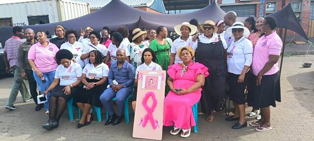

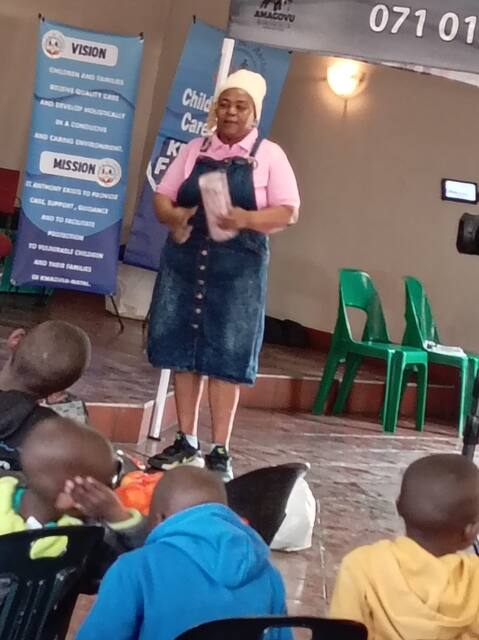

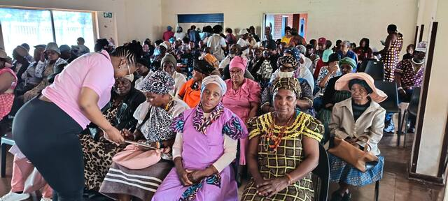

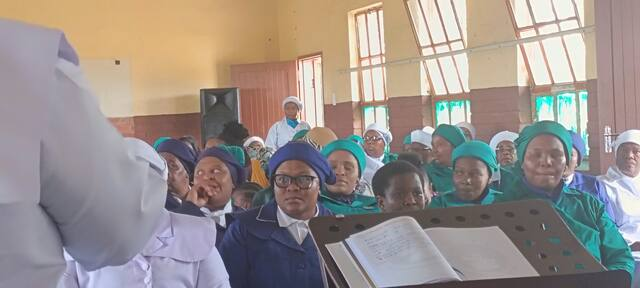

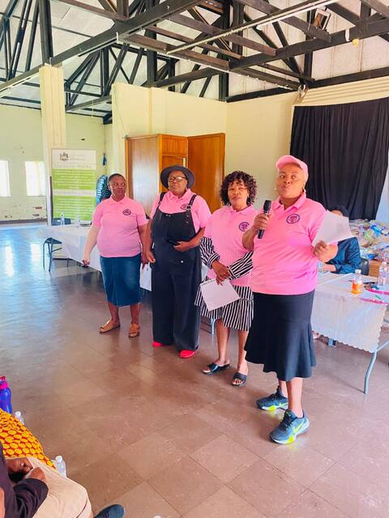

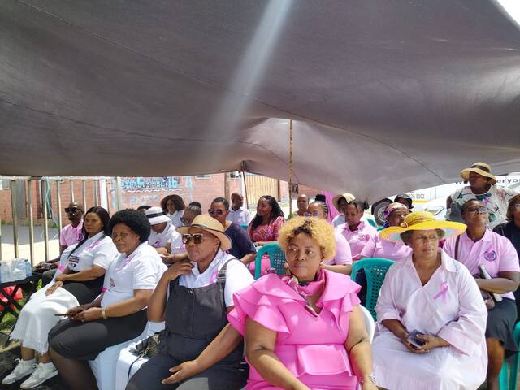

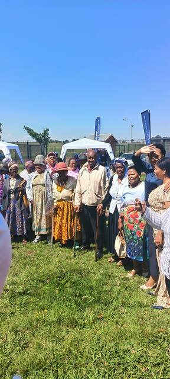

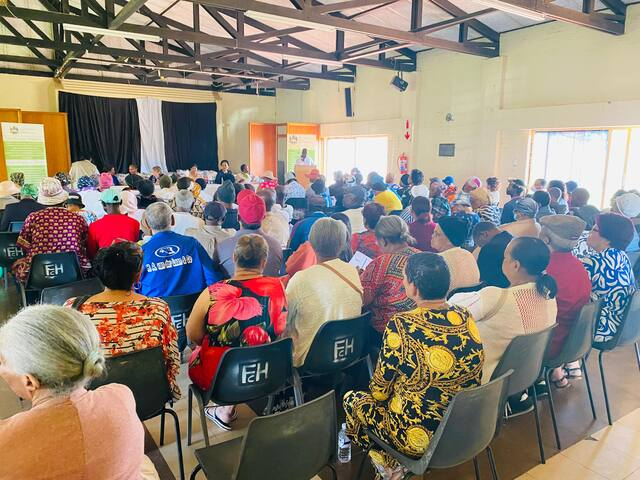

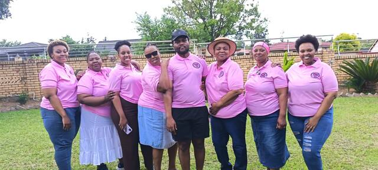

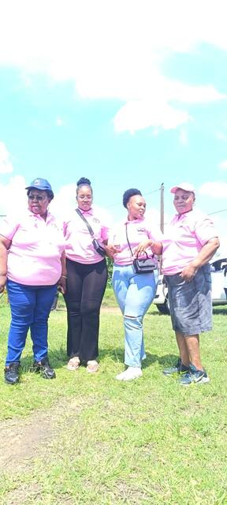

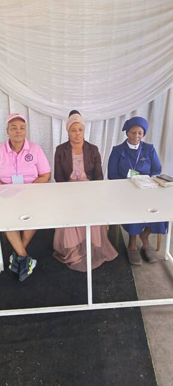

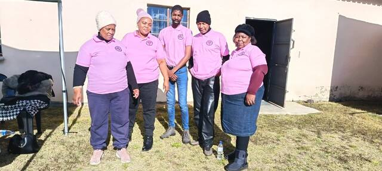
Information provided through our website is intended for general awareness and support purposes and should not be regarded as medical advice. Please consult an appropriately qualified healthcare professional about diagnosis, treatment and any medical concerns.
Want awareness in your community?
Schools, churches, workplaces and community groups are welcome to get in touch.